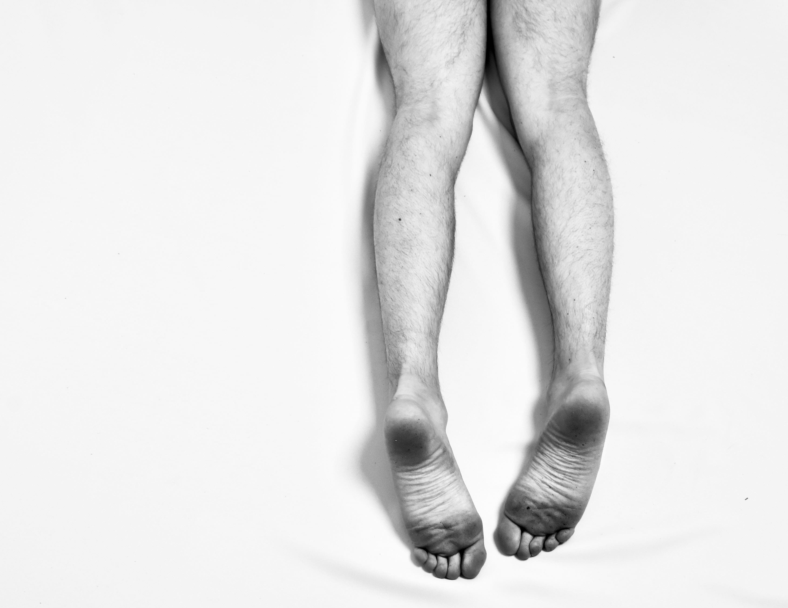
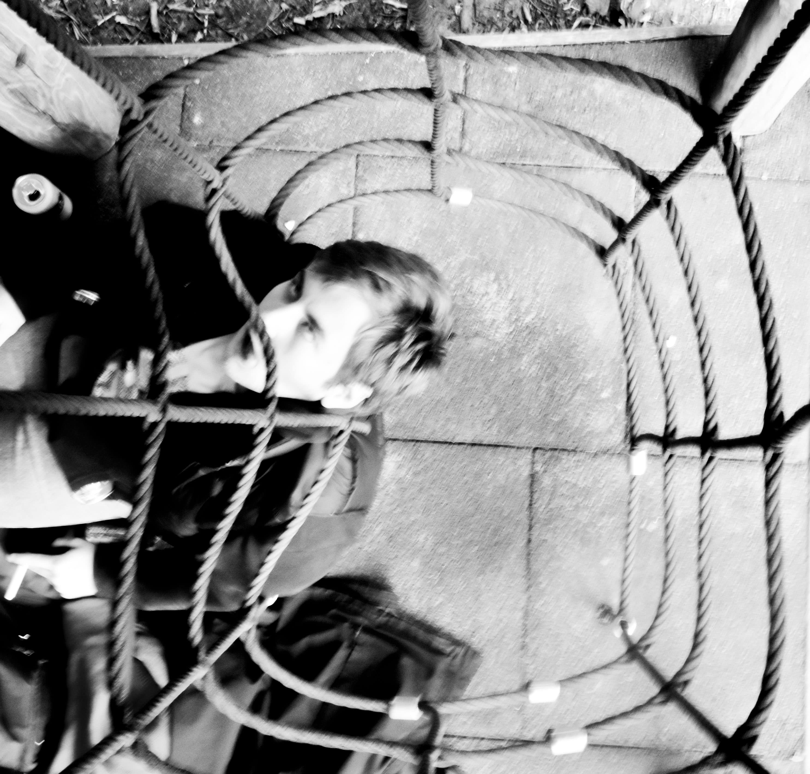
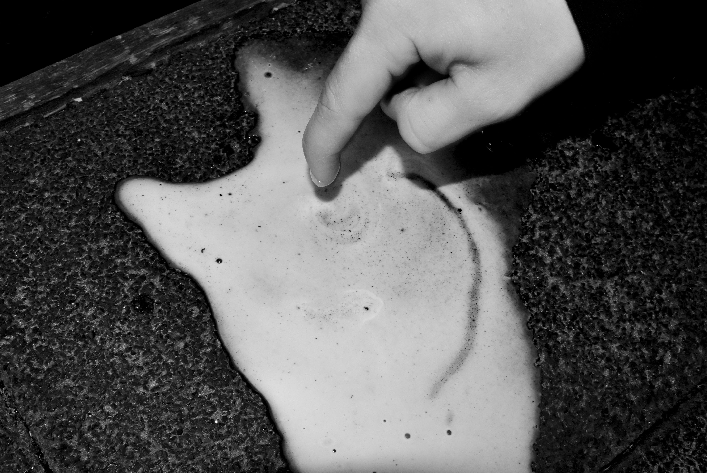

KLUB POKLAD

Wanneer ik uitga drink ik graag een beetje. Dan voel ik me wat
comfortabeler. Een tijdje geleden ben ik met andere dingen ook
gaan experimenteren. Ik vond het geweldig. Het gevoel is zeer
bevrijdend. Dan denk ik aan niets meer. Geen zorgen of de mening
van andere mensen op wie dat ik echt ben. Ik wil het gevoel dat ik
heb voor Mateusz stoppen hiermee. Als ik niets voel, voel ik dit ook
niet. Ik kan het niet langer verbergen.
Maar, soms loopt het uit de hand. Vorige week, kreeg ik iets
aangesmeerd van een man in Klub Poklad. Ik wist eigenlijk niet
eens wat het was. Een soort poeder. Maar ik was zo onder de
invloed van andere dingen, dat ik gewoon een impulsieve beslissing
nam. Vanaf dat het in mijn lichaam zat voelde ik dat het te laat was.
Mijn organen stopte om de beurt met functioneren. Voor dat ik het
wist stopte mijn hele lichaam met werken en heb ik Mateusz nooit
meer terug gezien.

